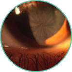
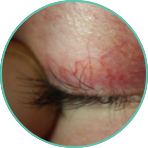
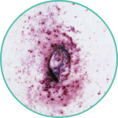
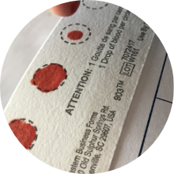

Suivez les indices. Trouvez la réponse.
Ce site Web fournit des informations sur la façon de dépister la maladie de Fabry chez votre patient.
Êtes-vous cardiologue ?Êtes-vous néphrologue ?
Reconnaître les signes de la maladie de Fabry
Commander un test de gouttes de sang séché(GSS) gratuit
Envoyer à Dynacare pour analyse
Les retards de diagnostic sont fréquents en raison de la nature hétérogène de la maladie et de la manifestation de nombreux symptômes non spécifiques.2
La maladie de Fabry non diagnostiquée ou non prise en charge réduit l’espérance de vie de 15 ans chez les femmes et de 20 ans chez les hommes selon les données d’histoire naturelle.3,4
Bien que les symptômes puissent être difficiles à reconnaître, le diagnostic peut être simple.
Vous pouvez faire la différence ! Commandez un kit GSS pour vous permettre d’effectuer un test de dépistage de la maladie de Fabry lorsque vous voyez ou suspectez des symptômes ou des manifestations cliniques.
La cornée verticillée est l’un des signes les plus fréquents et précoces de la maladie de Fabry. Un autre signe courant est la tortuosité des vaisseaux sur la paupière.
 La caractéristique clinique précoce la plus visible de la maladie de Fabry.
La maladie de Fabry est causée par une mutation dans un gène appelé GLA, qui encode une enzyme appelée alpha-galactosidase A (α-GAL A). Le manque d’α-GAL A peut entraîner une accumulation de substances grasses dans les cellules, provoquant les signes et symptômes de la maladie de Fabry. Cette affection est héréditaire d’une manière liée au chromosome X.5,6
Le diagramme ci-dessous montre les étapes menant au diagnostic de la maladie de Fabry. Le dosage enzymatique de l’α-GAL A et le séquençage de l’ADN peuvent tous deux être effectués sur le même échantillon de GSS.5
* Les résultats seront fournis dans un délai d’environ 3 semaines.
Les tests GSS comprennent trois étapes simples :
Étape 1 : Obtenir le consentement du patient et remplir le formulaire de demande et le questionnaire sur les antécédents du patient.
Étape 2 : Prélever des échantillons de sang.
Étape 3 : Envoyer l’échantillon par courrier.
Si vous voulez des conseils ou de l’assistance, voici un guide pratique qui vous indique à qui vous adresser :
| Je n’ai pas reçu les résultats après 3 semaines. | Je ne sais pas à qui je dois confier mon patient suspecté d’avoir la maladie de Fabry. |
| Je ne me sens pas à l’aise de lire les résultats. | J’aimerais que mes patients bénéficient de ressources sur la maladie de Fabry. |
| J’aimerais parler des résultats avec un généticien. | Je préfère envoyer mon patient à un laboratoire pour recueillir l’échantillon GSS. |
| Contactez Dynacare | Contactez votre représentant Sanofi Genzyme |
Sanofi Genzyme et Dynacare se sont associés pour augmenter l’accès aux tests GSS de l’analyse enzymatique et du séquençage génétique pour la maladie de Fabry.
Pour obtenir plus d’informations ou pour demander un kit de dépistage gratuit, veuillez envoyer un courriel à FabryAwareness@sanofi.com ou contacter votre représentant régional.
Communiquez avec nous